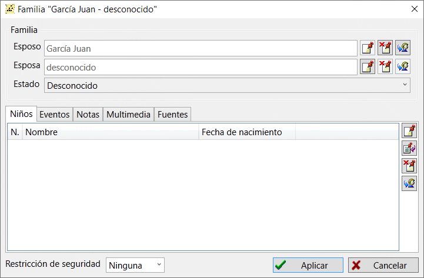

El registro de familia es uno de los principales tipos de registro disponibles en una base de datos genealógica. Los registros de familia almacenan información sobre una familia, uniones, eventos y datos de la vida de la familia y sus hijos. También puede añadir notas de texto, referencias a fuentes y objetos multimedia en un registro familiar.

Hay una tabla en la pestaña "Familias" de la ventana principal de trabajo, donde puede encontrar todas las familias almacenadas en la base de datos. Cada registro familiar tiene un área de resumen a la derecha de la tabla, donde puede ver toda la información sobre una familia, uniones, hijos, eventos, y donde puede saltar a otros registros.
Nota: si uno de los cónyuges no aparece indicado de ningún modo en el registro familiar se considera desconocido (para ello existen reglas de tratamiento específicas para los diagramas de árbol); si se indica como persona con el nombre N o cualquier otra abreviatura, se considera una indicación de un registro específico.
Ver también: Persona, Evento, Fuente, Nota, Multimedia, Ubicación, Dirección.